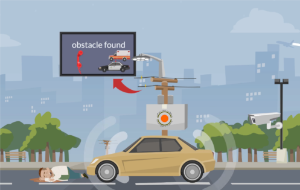
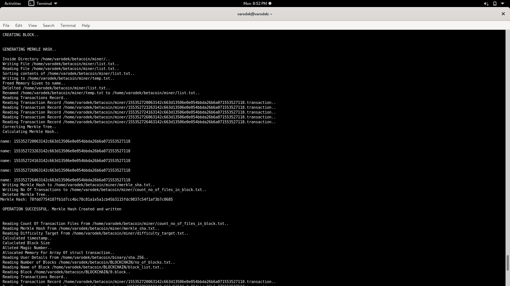

My Projects |
GSoC 2019 - POSIX Compliance.The goal of the project is to update the compliance status of RTEMS with POSIX IEEE and FACE General purpose profile. Various functions and headers were required to be implemented. As the project will advance, many headers, stubs, documentation, and test-suites will be added. Read-More/ Full-Project Blog |
|
|  |
AccinhibitorIt is a Self-sustainable, AI-powered accident detection system. It is a team project. |
|  |
Simulation of BitcoinMinimal Working Simulation of Bitcoin. It is a group project. Another version of this project is under development. The code was written completely from scratch in C. Full-Project |

|
Ryan Ghaziabad Electronic Voting System (RGEVS).For last 18 years, my school, Ryan International Ghaziabad, was using a ballot box based voting system. Hence I made the first ever electronic voting system for my school. The software has been in use for 3 years in 2 schools. Full-Project |